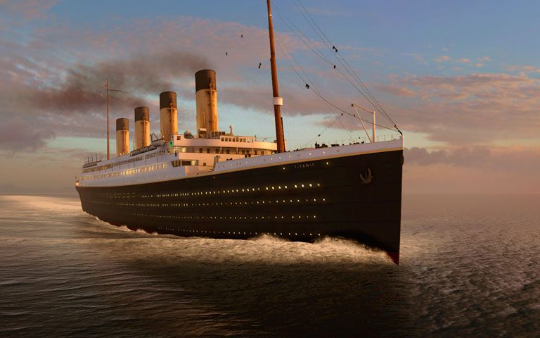

Titanic

Titanic Details
1. Introduction:
- The RMS Titanic was a British passenger liner that sank on its maiden voyage from Southampton, England, to New York City in 1912.
- It was one of the largest and most luxurious ships of its time, considered unsinkable due to its advanced engineering and safety features.
2. Construction and Specifications:
- Built by the Harland and Wolff shipyard in Belfast, Northern Ireland.
- The Titanic had a length of 882 feet 9 inches (269.1 meters) and a maximum breadth of 92 feet 6 inches (28.2 meters).
- It had a total of nine decks, with accommodations for approximately 2,435 passengers and a crew of around 900 people.
- The ship weighed approximately 46,328 gross registered tons (GRT).
3. Passenger Amenities and Facilities:
- The Titanic featured luxurious amenities, including a swimming pool, gymnasium, squash court, Turkish bath, and a first-class promenade deck.
- It had four elevators for first-class passengers, which were considered a novelty at the time.
- There were three classes of accommodation: First Class, Second Class, and Third Class (also known as steerage).
4. Maiden Voyage and Route:
- The Titanic departed from Southampton, England, on April 10, 1912, and was scheduled to arrive in New York City on April 17, 1912.
- The ship made stops in Cherbourg, France, and Queenstown (now Cobh), Ireland, to pick up additional passengers.
5. Sinking of the Titanic:
- On the night of April 14, 1912, the Titanic struck an iceberg in the North Atlantic Ocean, about 375 miles (600 kilometers) south of Newfoundland.
- The collision caused severe damage to the ship's hull, leading to its eventual sinking.
- Despite its advanced safety features, including watertight compartments, the ship could not withstand the flooding caused by the iceberg damage.
- The Titanic sank in the early hours of April 15, 1912, with the loss of more than 1,500 lives.
6. Aftermath and Legacy:
- The sinking of the Titanic remains one of the deadliest maritime disasters in history.
- It led to significant changes in maritime regulations, including the requirement for sufficient lifeboats on all passenger ships.
- The tragedy captured worldwide attention and has been the subject of numerous books, films, and documentaries.